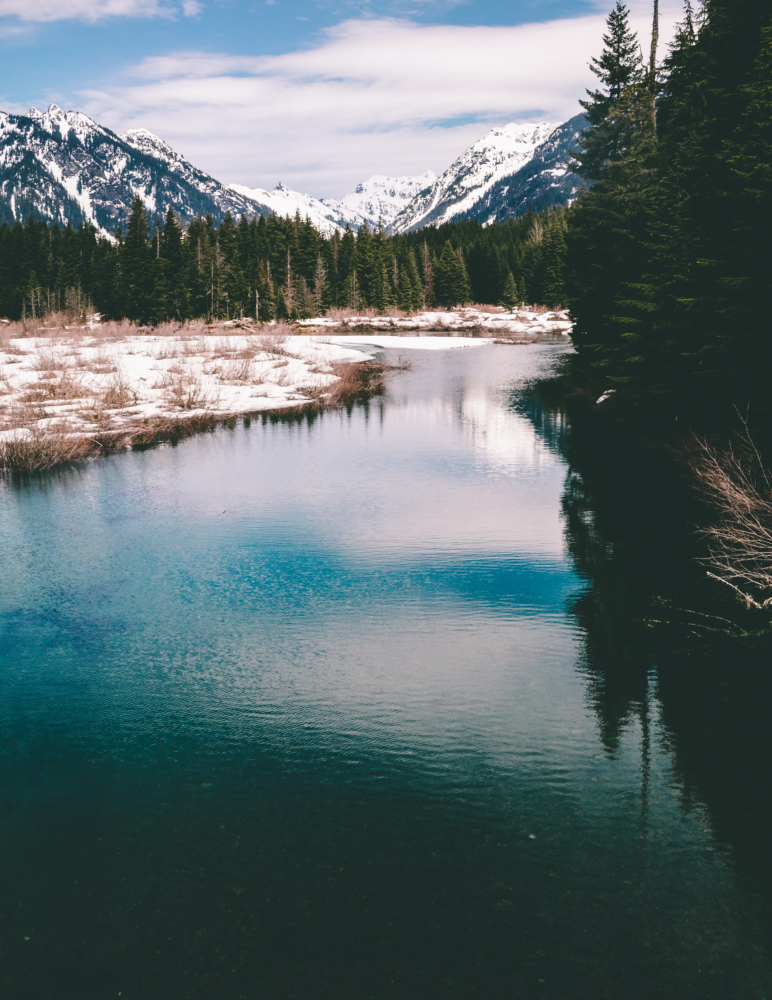
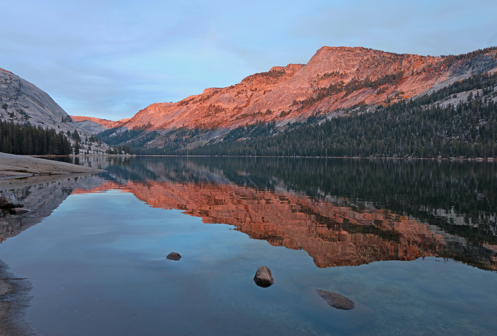

Λίμνες στην Ελλάδα

Στην Ελλάδα υπάρχουν δεκάδες φυσικές και τεχνητές λίμνες καθώς και πολλές λιμνοθάλασσες. Οι περισσότερες
λίμνες περιέχουν γλυκό νερό και έχουν σχηματιστεί, κυρίως, μακριά από τις ακτές της θάλασσας ως αποτέλεσμα
τεκτονικών ή ηφαιστειακών δυνάμεων ή από την τήξη των παγετώνων. Οι λιμνοθάλασσες, που είναι αβαθείς
παράκτιες υδατοσυλλογές οι οποίες επικοινωνούν με τη θάλασσα μέσω ενός μικρότερου ή μεγαλύτερου ανοίγματος,
μπορεί να μετατραπούν σε λίμνες γλυκού νερού, όταν για κάποιο λόγο διακοπεί η εισροή αλμυρού νερού από
τη θάλασσα και παρουσιαστεί ικανοποιητική εισροή γλυκού νερού από ρέουσες υδατοσυλλογές.
Υπάρχουν και λίμνες με αλμυρό ή υφάλμυρο νερό, όταν το υπόστρωμά τους περιέχει πολλά διαλυτά άλατα ή όταν
δέχονται εισροές αλμυρού νερού. Οι τεχνητές λίμνες, που δημιουργήθηκαν από την κατασκευή φραγμάτων σε ρυάκια,
χείμαρρους ή ποτάμια ώστε να αποταμιεύουν το νερό τους για ποικίλους σκοπούς (άρδευση, γεωργία, ύδρευση κ.λπ.),
είναι η σπουδαιότερη κατηγορία τεχνητών υγρότοπων στην Ελλάδα. Καλύπτουν σημαντική έκταση και έχουν συμβάλλει
στη δημιουργία σημαντικών οικοσυστημάτων στο ελληνικό υγροτοπικό κεφάλαιο.
Μεγαλύτερες λίμνες του κόσμου

Οι μεγαλύτερες σε έκταση λίμνες του κόσμου άνω των 10.000 τ.χλμ. είναι οι παρακάτω:
|
Όνομα |
Τοποθεσία |
Μέγεθος |
| 1. |
Κασπία Θάλασσα |
Ευρώπη-Ασία |
371.000 τ.χλμ. |
| 2. |
Λίμνη Μίσιγκαν-Χιούρον |
Αμερική |
117.800 τ.χλμ. |
| 3. |
Σουπίριορ |
Β. Αμερική |
82.100 τ.χλμ. |
| 4. |
Βικτωρία |
Αφρική |
68.422 τ.χλμ. |
| 5. |
Αράλη |
Ασία |
66.458 τ.χλμ. |
| 6. |
Ταγκανίκα |
Αφρική |
32.892 τ.χλμ |
| 7. |
Βαϊκάλη |
Ασία |
31.500 τ.χλμ. |
| 8. |
Νυάσσα |
Αφρική |
31.000 τ.χλμ. |
| 9. |
Μεγάλη Λίμνη των Άρκτων |
Β. Αμερική |
31.000 τ.χλμ. |
| 10. |
Μεγάλη Λίμνη των Σκλάβων |
Β. Αμερική |
27.000 τ.χλμ. |
| 11. |
Ηρι |
Β. Αμερική |
25.800 τ.χλμ. |
| 12. |
Γουίνιπεγκ |
Β. Αμερική |
24.600 τ.χλμ. |
| 13. |
Μπαλκάς |
Ασία |
20.600 τ.χλμ. |
| 14. |
Μπαλκάς |
Ασία |
20.600 τ.χλμ. |
| 15. |
Οντάριο |
Β. Αμερική |
18.750 τ.χλμ. |
| 16. |
Λάντογκα |
Ευρώπη |
18.130 τ.χλμ. |
| 17. |
Λίμνη Τσαντ |
Αφρική |
18.000 τ.χλμ. |
| 18. |
Λίμνη Ροδόλφου |
Αφρική |
10.250 τ.χλμ. |
Επεμβάσεις στους Ποταμούς

Σήμερα παρουσιάζονται αναπτυξιακά σχέδια που αποτελούν νέο κύμα διευθετήσεων και επεμβάσεων για μερικούς
από τους τελευταίους μεγάλους ποταμούς, που έχουν μείνει ανεπηρέαστοι μέχρι σήμερα(Rosenberg & Bodaly, 1994).
Εκτιμάται ότι μέχρι το έτος 2000 θα έχουν γίνει παρεμβάσεις στο 60% περίπου των ρευμάτων και ποταμών
παγκοσμίως (Petts, 1989).
Αν και τα φράγματα αποτελούν τη μεγαλύτερη τεχνική ανθρώπινη επέμβαση στους ποταμούς, τα ποτάμια συστήματα
απειλούνται και από διάφορες άλλες επεμβάσεις, όπως: άντληση νερού, αλλαγές στη μορφή της κοίτης τους,
δημιουργία αρδευτικών καναλιών, ευθυγραμμίσεις, εκτροπές, κλπ. Όλες αυτές αλλοιώνουν τη ροή του ποταμού
και μεταβάλλουν τα ενδοποτάμια αλλά και τα παραποτάμια ενδιαιτήματα. Παράλληλα:
Η εντατική χρήση γης με αποψιλώσεις, εντατικές καλλιέργειες και αύξηση των εγκαταστάσεων, επιδρά στα ποτάμια,
συντελώντας και στη μεταβολή του τοπίου. Ορισμένες αλλαγές φαινομενικά μικρής σημασίας, θα πρέπει στο
μέλλον να εξετασθούν με περισσότερη σοβαρότητα.
Οι ανάγκες για νερό στον 21ο αιώνα θα εντείνουν την πίεση για σχέδια μεταφοράς και λήψης νερού (Cleick, 1993).
Η μεταφορά και εξάπλωση ξενόφερτων ειδών, η οποία έχει ενταθεί κατά τον 20ο αιώνα, απειλεί να μεταβάλλει
τη σύνθεση των ειδών ορισμένων περιοχών.
Η ρύπανση από οργανικές ουσίες και βιομηχανικά απόβλητα, αν και μειώθηκε κάπως τα τελευταία 20 χρόνια,
αποτελεί μόνιμη απειλή για την ποιότητα του νερού των εντονότερα διαχειριζόμενων ποταμών της Ευρώπης και
της Β. Αμερικής, αλλά και των ποταμών των υπό ανάπτυξη χωρών.
Τέλος, η επερχόμενη παγκόσμια αλλαγή του κλίματος της γης κατά τον 21ο αιώνα, η οποία οφείλεται στην
ατμοσφαιρική μεταφορά ρύπανσης σε μεγάλες αποστάσεις, στο φαινόμενο θερμοκηπίου, στην «τρύπα» του όζοντος,
στην υπερκατανάλωση των ορυκτών καυσίμων που ελευθερώνει στο περιβάλλον «ενταφιασμένη» ενέργεια, και
επομένως στις μεταβολές της θερμοκρασίας και των βροχοπτώσεων, μεταβάλλει τη φυσική κατάσταση πολλών
ποτάμιων συστημάτων.
Τα ποτάμια παγκοσμίως συνεχίζουν να αποτελούν αντικείμενο συνεχών παρεμβάσεων, με σοβαρές επιπτώσεις στη
δομή και τη λειτουργία τους.
Πηγές:
Βικιπαίδεια,
Μονάδα Ποιότητας Ποτάμιων Συστημάτων